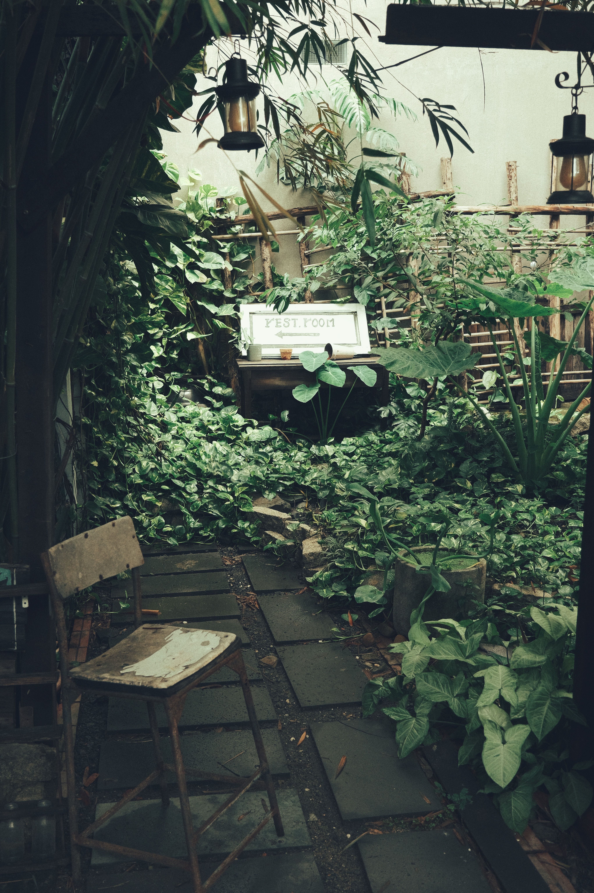
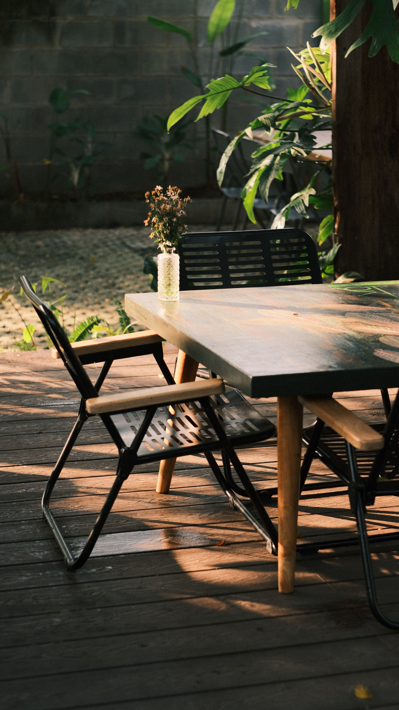
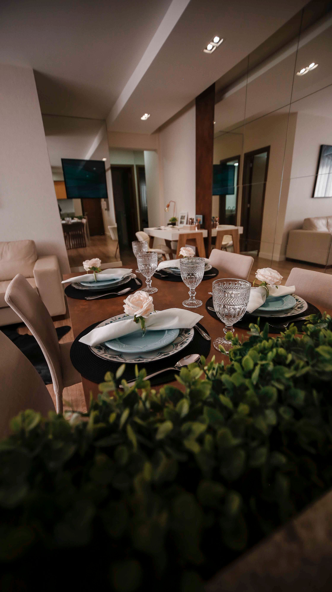

In This Article
- Introduction
- Plan the Layout Around Real Use
- Keep Circulation Clear
- Choose Furniture With the Right Scale
- Use Multifunctional Pieces
- Take Advantage of Walls Without Overloading Them
- Use Light to Increase the Sense of Space
- Choose a Cohesive Color Palette
- Use Mirrors Carefully
- Create Storage Without Visual Clutter
- Add Personality With Restraint
- Combine the Living Room With Other Functions
- Review the Room Before Buying More
- Frequently Asked Questions
- Conclusion
Introduction
A small living room can be comfortable, attractive, and highly functional when the layout, furniture scale, lighting, and storage are planned according to the real dimensions of the room and the habits of the people who use it. The objective is not to make the room look empty, but to make each piece earn its place.
Before buying anything, measure doors, windows, outlets, walls, and main circulation routes. Decide what the living room must support: conversation, television, reading, receiving guests, occasional work, or perhaps a small dining area. The layout should respond to these activities rather than to an idealized photograph.
Plan the Layout Around Real Use
Start with the largest furniture and the primary activity. If conversation is important, arrange seating so people can face each other comfortably. If television is the main focus, consider viewing distance and glare before placing the sofa.
Choose one focal point. It may be a window, artwork, bookcase, fireplace, or television. Orienting furniture around one visual anchor helps the room feel organized instead of looking like a collection of unrelated objects.
A small room can support more than one function, but each additional function needs a clear reason. A compact desk or small dining table may fit, but several permanent zones can quickly reduce flexibility.
Keep Circulation Clear
Maintain a direct route between the entrance and adjacent rooms. If someone needs to walk around a coffee table or move a chair every time they pass through, the arrangement needs adjustment.
Do not automatically push every piece against the wall. In some rooms, leaving a small gap behind the sofa can improve proportion. In very narrow rooms, however, using the perimeter may be the more practical option.
Use painter's tape to mark furniture dimensions on the floor before purchasing. This helps reveal how much usable space remains when a sofa, table, or cabinet is actually present.
Choose Furniture With the Right Scale
Scale matters more than the number of pieces. One oversized sofa can dominate the room, while too many tiny seats can create visual noise and consume the same amount of circulation space.
Measure depth as carefully as width. A sofa with slim arms and a moderate depth can provide more useful seating without projecting too far into the room.
Furniture with visible legs can make more floor area visible and create a lighter appearance. At the same time, closed storage can be valuable when the household owns many everyday items. Choose according to real needs rather than a single design rule.
Use Multifunctional Pieces
Multifunctional furniture can reduce the number of objects in a small room. An ottoman may provide seating, a footrest, and hidden storage. A nesting table can expand when needed and take up less space afterward.

A coffee table with storage may help organize remote controls, blankets, or games, but it still needs enough clearance around it. In a very compact room, skipping the central table and using side tables may improve circulation.
Extendable or folding furniture can be useful when the room serves occasional guests or meals, provided the mechanism is easy enough to use regularly.
Take Advantage of Walls Without Overloading Them
Vertical storage can free floor area. A tall bookcase, wall-mounted cabinet, or floating shelf may use wall space efficiently.
However, filling every wall with storage can create a feeling of enclosure. Alternate functional storage with calmer wall areas.
Keep heavy wall-mounted pieces securely fixed and appropriate for the wall type. Safety, stability, and load capacity should always take priority over appearance.
Use Light to Increase the Sense of Space
Preserve access to natural light. Avoid blocking windows with tall furniture when possible, and choose curtains that can open fully during the day.
Artificial lighting should be layered. Combine a general source with task lighting for reading and softer ambient light. Relying on a single bright ceiling fixture can flatten the room and make it feel less comfortable.
Floor lamps with narrow bases or wall lights can save table space. Keep cables organized and away from circulation routes.
Choose a Cohesive Color Palette
Light colors can reflect more light, but they are not mandatory. A coherent palette with limited abrupt contrast can make the room feel more continuous.

Use one or two accent colors through cushions, art, rugs, or small objects. Repetition creates visual unity without requiring every item to match.
A deeper wall color can work in a small room when lighting is sufficient and the rest of the palette supports it. The important point is coherence rather than following a strict rule.
Use Mirrors Carefully
Mirrors can add depth and reflect light when positioned well. Before hanging one, check exactly what it will reflect from the main seating and entry points.
A mirror opposite a bright window can be helpful, while one facing clutter or a television may add unnecessary visual noise.
One well-scaled mirror often works better than several small mirrors placed without a clear composition.
Create Storage Without Visual Clutter
Small living rooms benefit from defined places for remote controls, chargers, documents, toys, and other everyday objects. Surfaces completely covered with small items make the room feel smaller even when the furniture is correctly sized.
Use closed storage for items that do not need to remain visible. Open shelves can hold a limited number of books, plants, or decorative objects.
Review storage regularly. If a basket or cabinet is full of things that are rarely used, removing some possessions may be more effective than buying another storage unit.
Add Personality With Restraint
A small room does not need many decorative objects to feel personal. One artwork, one plant, a rug, and a few cushions may be enough.

Rotate collections instead of displaying everything at once. This keeps the room fresh and reduces visual clutter.
Choose details that relate to the people who use the room. Personal photographs, books, handmade pieces, or objects collected over time can add more character than generic accessories.
Combine the Living Room With Other Functions
If the room also needs to support dining or work, define those functions with furniture placement rather than heavy partitions. A rug, lighting change, or compact desk can create a visual zone.
Keep secondary functions flexible. A folding desk or extendable table may be more suitable than a permanent large setup.
Make sure additional activities do not block the main circulation routes or prevent the room from returning easily to its primary use.
Review the Room Before Buying More
Live with the new layout for several days before adding accessories. Notice whether a table is always moved, whether a chair blocks a route, or whether storage is easy to use.
Photograph the room from the entrance and main seating positions. A photo can reveal scale problems, imbalance, and clutter more clearly than standing inside the room.
Remove any item that feels unnecessary and test the room without it. In a small space, subtraction often improves comfort more than another purchase.
Create a Simple Maintenance Routine
Small rooms stay pleasant when they are easy to reset. Spend a few minutes regularly returning objects to their places, clearing surfaces, and managing cables.
Review the room every few months. If a table is never used or a basket is always in the way, remove it. Every item should contribute comfort, storage, or clear visual value.
Choose materials that match the household. Easy-to-clean upholstery, durable rugs, and practical storage can make a small living room much easier to maintain.
Frequently Asked Questions
What is the first thing to change in a small living room?
Start with the layout. Measure the room, identify the main activity, and preserve clear circulation before buying new furniture or decoration.
Should all furniture be small?
No. Furniture should be proportional and useful. One correctly sized sofa may work better than several undersized pieces.
Do light colors always make a room feel larger?
They can reflect light, but lighting, furniture scale, organization, and a coherent palette are equally important.
Is a coffee table necessary?
No. In a very small room, side tables, nesting tables, or an ottoman may provide more flexibility and better circulation.
Use Rugs to Organize the Seating Area
A rug can visually connect the sofa and chairs, especially in an open-plan room. Choose a size that relates to the seating arrangement instead of using a very small rug floating in the middle.
Keep edges flat and choose a material suitable for traffic, pets, children, and cleaning. The rug should support the room's function rather than create another maintenance problem.
Use Rugs to Organize the Seating Area
A rug can visually connect the sofa and chairs, especially in an open-plan room. Choose a size that relates to the seating arrangement instead of using a very small rug floating in the middle.
Keep edges flat and choose a material suitable for traffic, pets, children, and cleaning. The rug should support the room's function rather than create another maintenance problem.
Use Rugs to Organize the Seating Area
A rug can visually connect the sofa and chairs, especially in an open-plan room. Choose a size that relates to the seating arrangement instead of using a very small rug floating in the middle.
Keep edges flat and choose a material suitable for traffic, pets, children, and cleaning. The rug should support the room's function rather than create another maintenance problem.
Use Rugs to Organize the Seating Area
A rug can visually connect the sofa and chairs, especially in an open-plan room. Choose a size that relates to the seating arrangement instead of using a very small rug floating in the middle.
Keep edges flat and choose a material suitable for traffic, pets, children, and cleaning. The rug should support the room's function rather than create another maintenance problem.
Use Rugs to Organize the Seating Area
A rug can visually connect the sofa and chairs, especially in an open-plan room. Choose a size that relates to the seating arrangement instead of using a very small rug floating in the middle.
Keep edges flat and choose a material suitable for traffic, pets, children, and cleaning. The rug should support the room's function rather than create another maintenance problem.
Use Rugs to Organize the Seating Area
A rug can visually connect the sofa and chairs, especially in an open-plan room. Choose a size that relates to the seating arrangement instead of using a very small rug floating in the middle.
Keep edges flat and choose a material suitable for traffic, pets, children, and cleaning. The rug should support the room's function rather than create another maintenance problem.
Use Rugs to Organize the Seating Area
A rug can visually connect the sofa and chairs, especially in an open-plan room. Choose a size that relates to the seating arrangement instead of using a very small rug floating in the middle.
Keep edges flat and choose a material suitable for traffic, pets, children, and cleaning. The rug should support the room's function rather than create another maintenance problem.
Use Rugs to Organize the Seating Area
A rug can visually connect the sofa and chairs, especially in an open-plan room. Choose a size that relates to the seating arrangement instead of using a very small rug floating in the middle.
Keep edges flat and choose a material suitable for traffic, pets, children, and cleaning. The rug should support the room's function rather than create another maintenance problem.
Conclusion
Decorating a small living room successfully depends on proportion, circulation, and clear priorities. Plan the layout around real activities, choose appropriately scaled furniture, use walls and storage carefully, and preserve natural and artificial light.
Personality does not require many objects. A few meaningful details combined with a coherent palette and practical storage can make the room feel complete. When every piece has a clear function, a small living room can be comfortable, organized, and visually balanced.